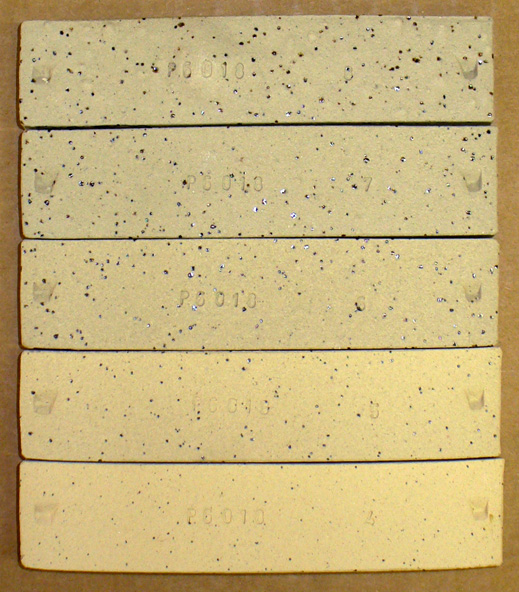
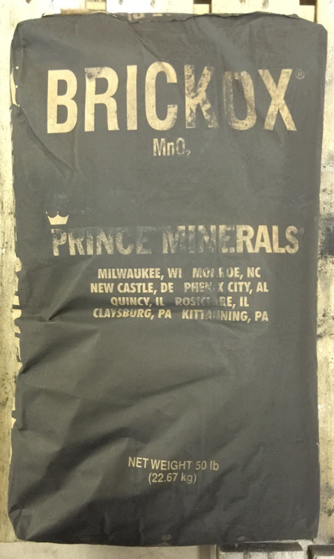
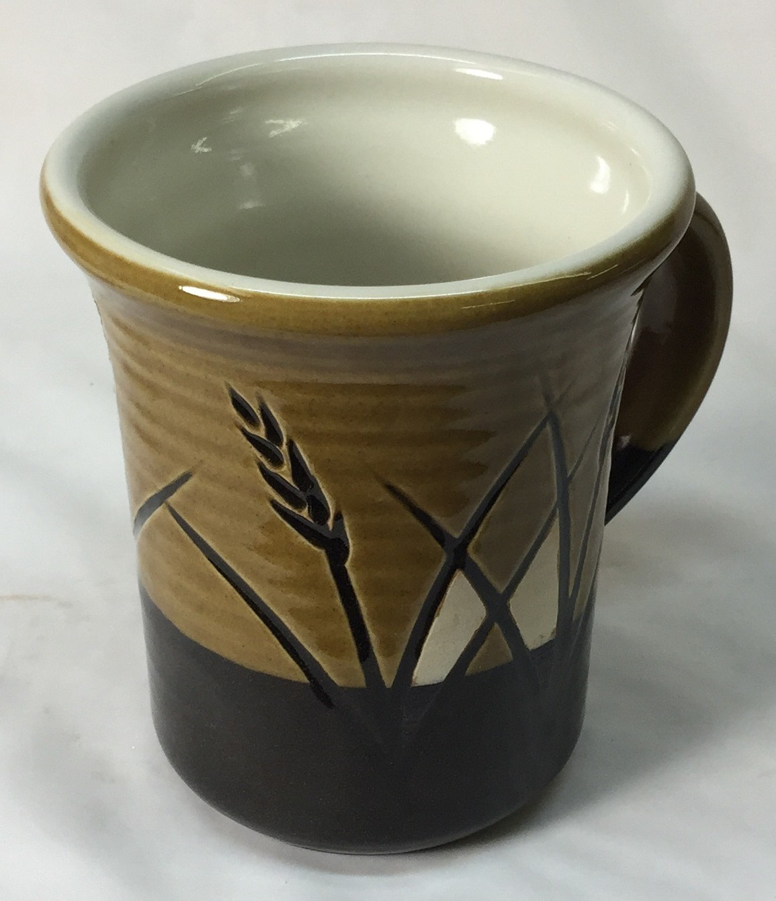
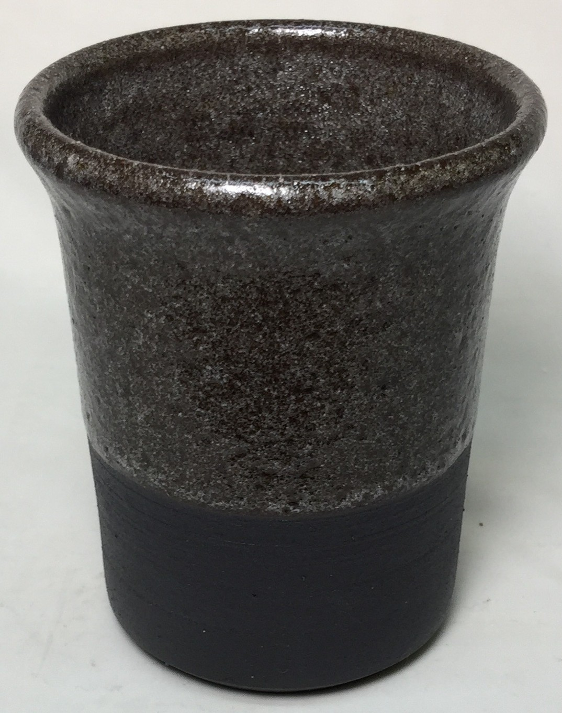
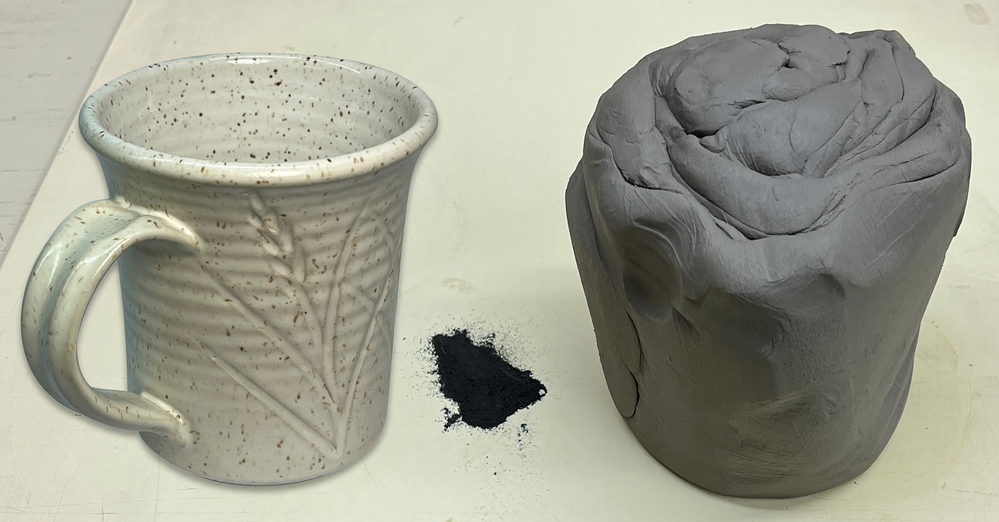

Manganese in Clay Bodies
A number of minerals source manganese in very high percentages, these can be used to make pure manganese dioxide, which is used in the manufacture of stains and as a raw colorant in glazes. However, clay body manufacturers do not need to use the pure material because the element manganese can be found in the materials umber and ochre. A benefit of these is that both are clay-like. It takes about 10% raw umber to make a buff burning clay body fire black. The umber does not add any handling hazards beyond those common to clays, the main of which is the presence of quartz.
What about the MnO in black clay bodies generating fumes during firing or leaching into food and drink? Some producers are adding 5-10% pure manganese powder to stain clay bodies, claiming there is no problem if cone 6 kilns are ventilated. Consider also that pure manganese powder is employed in hundreds of glaze recipes in common use, often at levels far above 5%. Additionally, that manganese begins to volatilize just beyond cone 6 (black bodies will start bloating and then melt making that abundantly clear). If you are firing kilns full of MnO-sourcing materials at cone 6 or below, and have a ventilation system attached, it does not seem wise to focus on issues with this if it takes attention away from the real hazard: quartz.
A way to completely avoid the above-mentioned problem is the use an engobe that is colored using a black ceramic stain. Our L3954B is a good base for cone 6 and L3954N for high temperatures.
Among potters and hobbyists, another significant use of manganese is in metallic raku-fired glazes (20% or more is common in recipes). Standing downwind or close to outdoor raku kilns laden with manganese-saturated glazes is an obvious hazard. However, adequate temperatures must be reached for the fuming to occur.
What about granular manganese used to add speckle to bodies? Before classifying these as dangerous the situation must be put into perspective. Such bodies contain only about 0.2% of 60-80 mesh manganese granular. We have found that at cone 6 oxidation, granular manganese can be tolerated without body bloating in vitreous (near-zero porosity) bodies. This indicates that gas-producing decomposition is not occurring (otherwise bloating would occur). Also, the vast majority of manganese particles are encapsulated within the clay matrix. Most of the tiny percentage of particles exposed at the body surface are engulfed by the glaze. All of the particles that actually bleed up into the glaze to either near or at the surface have been significantly diluted and stabilized against leaching by the melt that surrounds them (they bleed and diffuse into it). Thus, the total area of leachable manganese glass on a functional surface is extremely small.
| By Tony Hansen Follow me on        |  |
Related Information
Decomposing manganese granular particles are causing this stoneware to bloat

This picture has its own page with more detail, click here to see it.
This is a cone 6 stoneware with 0.3% 60/80 mesh manganese granular (Plainsman M340). Fired from cone 4 (bottom) to cone 8 (top). This body is normally stable to cone 8, but with the manganese it begins to bloat at cone 7! This is evidence that particles of manganese are generating gases as they decompose and melt at the same time as the body is vitrifying, these produce volumes and pressures sufficiently suddenly that closing channels within the maturing body are unable to vent them out.
A body containing manganese bubbles the glaze

This picture has its own page with more detail, click here to see it.
Laguna Barnard Slip substitute fired at cone 03 with a Ferro Frit 3195 clear glaze. The very high bubble content is likely because they are adding manganese dioxide to match the MnO in the chemistry of Barnard (it gases alot during firing).
An original container of manganese dioxide

This picture has its own page with more detail, click here to see it.
This bag will give you a clue as to what manganese dioxide, MnO2, is mainly used for. Staining bricks.
A cone 6 black-burning stoneware with a porcelain surface. How?

This picture has its own page with more detail, click here to see it.
Black-burning bodies are popular with many potters. This one is stained by adding 10% raw umber to a buff-burning stoneware. Umbers are powerful natural clay colorants, they have high iron and also contain some manganese oxide. Could a white engobe produce a porcelain-like surface on such a clay body? Yes. L3954B engobe was applied during leather-hard stage to this Plainsman Coffee Clay mug (on the inside and partway down the outside). After bisque, transparent G2926B glaze was applied inside and GA6-B outside. Notice the GA6-B over the engobe fires amber but over the black it produces a deep glossy brown. The engobe was mixed into a thixotropic slurry, as explained on the page at PlainsmanClays.com (see link below), and applied in a relatively thin layer. This porcelain-like result is a testament to the covering power of a true engobe. It is no wonder they are so popular in the ceramic tile industry - a red-burning body can be turned white as a porcelain, which enables all the marvellous glazing and decorating they can do.
High-manganese black-burning body at cone 6. Practical and safe to use?

This picture has its own page with more detail, click here to see it.
This type of clay is made by a number of North American manufacturers. In this case, raw or burnt umber are used as the stain (10% or more). The umber is a clay that matures at low temperatures, so it acts as a flux in the body. However, some manufacturers make the mistake of adding it to a cone 6 body and the result is shown here: bubbling of the glaze (in this case it is a transparent) and bloating and warping of the body. The umber is decomposing and potentially gassing metal fumes. However, if the umber is added to a cone 10 clay the resultant body matures at around cone 6 and these gassing problems do not occur.
Wedging manganese speckle into a cone 6 buff stoneware

This picture has its own page with more detail, click here to see it.
Just need to make a few pieces? This is actually quite easy to do: Just wedge the clay over the granular manganese spread out on the board, when the board is clean turn the slug sideways and cut and layer about 20 times (to get 1 million layers). Then wedge normally. Only 0.2% manganese is needed (as a percentage of the dry clay). Since pugged clay contains 20% water it is easy to calculate the dry weight of this piece. For example, suppose this weighs 2 kg: 80% of that is 1.6 kg or 1600g. 0.2% of 1600 is 3.2 grams. Shown is the kind of mug I get. The outside glaze is G2934Y silky matte (opacified with tin and Zircopax) and the inside glaze is G2926BW glossy white. It was fired at cone 6 using the PLC6DS schedule.
Links
| Materials |
Manganese Granular
In ceramics, it is used primarily in clays and glazes to achieve fired speckle (including the brick industry). |
| Materials |
Manganese Oxide
|
| Materials |
Manganese Dioxide
A source of MnO used in ceramic glazes and the production of ceramic stains. Commonly made by grinding pyrolusite rock. |
| Materials |
Manganese Carbonate
|
| Hazards |
Manganese Inorganic Compounds Toxicology
|
| Hazards |
Manganese and Parkinsons by Jane Watkins
A story of one person and manganese poisoning. |
| Hazards |
Manganese Toxicity by Elke Blodgett
A story of the struggle of one person to identify and deal with manganese toxicity |
| Glossary |
Toxicity
Common sense can be applied to the safe use of ceramic materials. The obvious dangers are breathing the dust and inhaling the fumes they produce during firing. Here is a round-up of various materials and their obvious hazards. |
| Glossary |
Engobe
Engobes are high-clay slurries that are applied to leather hard or dry ceramics. They fire opaque and are used for functional or decorative purposes. They are formulated to match the firing shrinkage and thermal expansion of the body. |
| Temperatures | Manganese compounds may begin to fume (932-) |
 PayPal | No tracking, No ads, No paywall, No transient content! Just organized, concise information constantly updated and improved. Was this helpful? Consider supporting me. |
Got a Question?
Buy me a coffee and we can talk 

https://digitalfire.com, All Rights Reserved
Privacy Policy